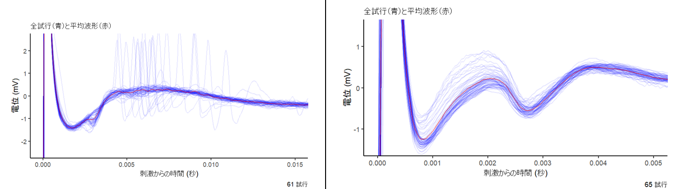

<!DOCTYPE html>
<html lang="ja">
<head>
<meta charset="UTF-8">
<meta name="viewport" content="width=device-width, initial-scale=1">
<title>研究紹介</title>
<link rel="stylesheet" href="https://fonts.googleapis.com/css2?family=Shippori+Mincho:wght@500;800&family=Zen+Kaku+Gothic+New:wght@400;500&display=swap">
<link rel="stylesheet" href="style.css">
</head>
<body>
<nav id="site-nav"></nav>
<main id="main"></main>
<footer id="site-footer"></footer>
<script src="site.js"></script>
<script>
/* この研究者の内容。ここを編集してください */
renderResearcher({
  name: "下田 哲也",
  role: "修士課程 2年",
  affiliation: "鹿児島大学大学院 理工学研究科 情報科学専攻 認知生体コース",
  photo: "",                       // 例: "images/shimoda.jpg"
  keywords: ["選択的注意", "向網膜系", "生体計測 (ウズラ)", "データ解析 (Python)"],
  
summary: [
    "鳥類など視覚が高度に発達した動物は、情報が溢れる環境下でも「自分に必要な情報」だけを自然に選び取って処理する優れたフィルター機能「選択的注意」を持っています。私はウズラをモデルとして用い、この機能が脳のネットワークでどのように生じているのか、そのメカニズムの解明に取り組んでいます。",
    
    // ↓ここに画像タグを直接入れる（パスは実際のものに合わせてください）
    "",

    "研究の主眼は、大脳から網膜へと向かう「向網膜系」と呼ばれる視覚情報の制御経路です。実験内容としては、ウズラの開頭手術を行って脳の特定部位に刺激電極と記録電極を直接刺入し、電気刺激に対するニューロンの発火を観測します。そこから得られたデータを解析することで、向網膜系においてどのような経路で情報処理がなされているのかを知ることが目的です。",

    "本研究の特徴は、情報科学からのアプローチでありながら、自らの手で生体実験からデータ解析までを一貫して行う点にあります。既存のデータセットをPC上で処理するだけでなく、実際にウズラの手術を行ってリアルな一次データを取得します。",
    
    // ↓波形の画像も必要ならここに入れる
    "",

    "生体信号に向き合い、Pythonなどを用いて意味のある特徴を抽出していく。「生き物の脳」という複雑な情報処理システムに対し、実験とデータ解析の両輪でアプローチしていくことが、本研究の独自の面白だと感じています。"
  ],
  
  topics: [], // トピック欄は空にして非表示にする
  
  publications: [
    { year: "2026", text: "日本視覚学会2026年 冬季大会", note: "鳥類大脳高外套におけるHA-HFの相互投射に関する研究", href: "" },
  ],
  email: "k6438970@kadai.jp",
  links: [
    { label: "ORCID", href: "https://orcid.org/0009-0009-4296-2172" }
  ]
});
</script>
</body>
</html>
